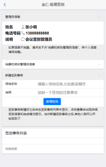
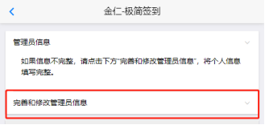
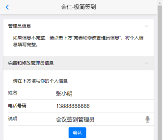
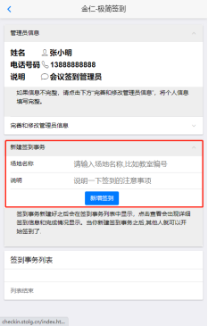
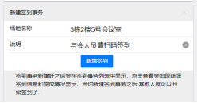
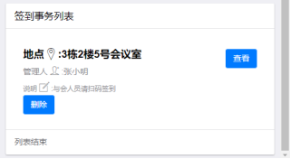
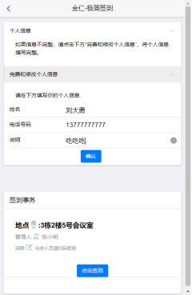
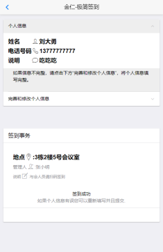
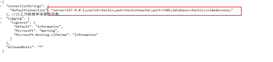

极简签到系统技术文档
Version:1.0
任何有一定规模的组织和机构在日常运行过程中,各种原因需要开会培训报名等事情都需要有签到和报名的要求，这种需求发生的概率不高，但是每次签到之后的统计都是挺麻烦的事情，利用先有的云服务和软件技术，完全可以将这个需求独立出来，做成一个手机APP。
而极简签到系统的设计原则是用最简单的设计，实现95%签到场景中签名和汇总的功能，其他的复杂需求，可以由用户自行扩展。
本系统设计中用户分为两个角色，签到事务管理者和签到人。
签到事务管理者（以下简称 管理员）：管理员可以发起签到任务，发起一次或者多次都可以，发起签到任务之后，将签到任务的二维码截图通过即时通信软件邮件或者其他的通讯手段发送给需要签到的人（签到人），甚至是将二维码打印下来在会议现场让与会者扫码签到也可以。
签到人：这是会议课程的参与者，他们需要参与会议并且签到，这种场景下，以微信为例，接收到签到任务截图，扫描二维码即可填写签到内容。
1. 管理员进入系统

如果管理员没有录入过自己的个人信息，则点击“完善和修改管理员信息”，将管理员的信息填写完整。只有三个需要填写的内容：


完成后点击确认即可，如果填写错误需要修改，重复这一步骤即可。
在新建签到事务的方格中，有场地和说明需要填写，填写完成后，签到事务就建立好了。可以建立多个不同的签到事务，如果信息有误，删除事务列表中的事务，重新填写一个即可。


新建完成之后，在签到事务列表中会显示签到任务。点击查看可以看到签到事务的发布信息和签到情况。
将此界面使用手机的截图功能保存后，打印成签到板或者使用微信等通讯工具发送到签到人员的手机上扫码即可开始签到。
签到人签到之后，在签到信息列表 中会显示所有签到人的名单，并且可以下载电子表格文件，用于后期统计。

输入自己的个人信息并且保存。
在“签到事务”中“点击签到”

签到完成。
完成本系统之后，我们将源码公布在了开源网站上，在遵守MIT的开源协议下，可以自由使用。
项目地址：https://github.com/toneywoo/CheckIn
系统架构
开发环境VS2019 .net core 5
数据库:MarriaDB 10.5
运行参数配置文件
CheckInAPI\appsettings.json

使用数据库脚本创建数据库:
打开mysql客户端,运行数据库脚本文件
iniDatabaseMysql.sql